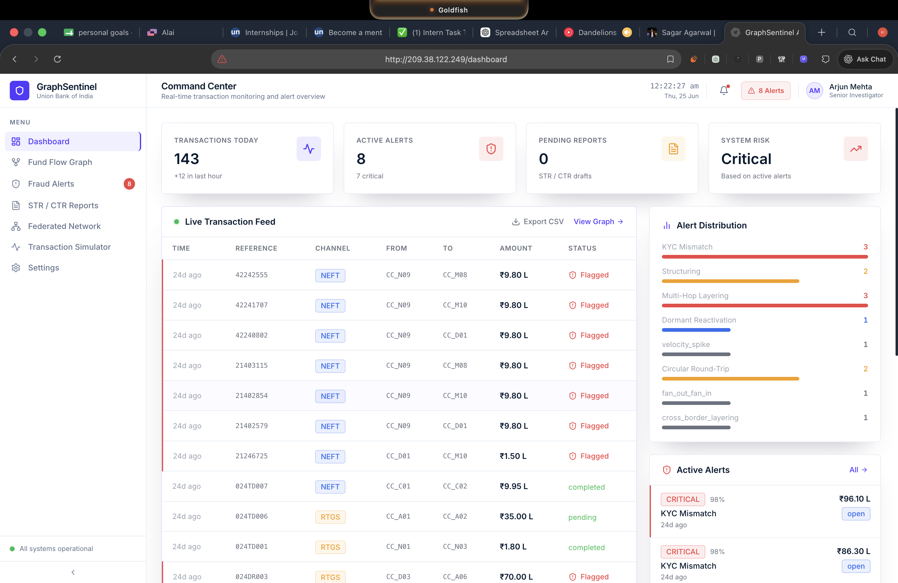
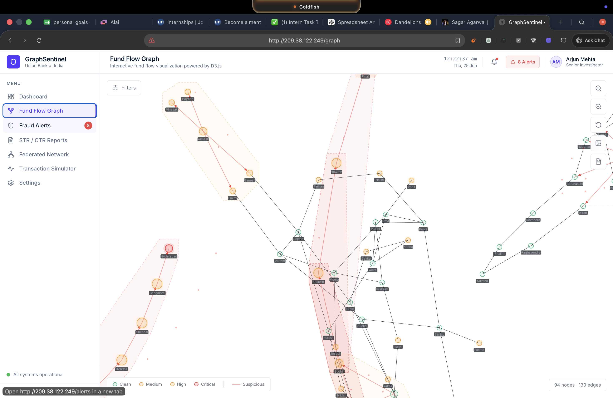
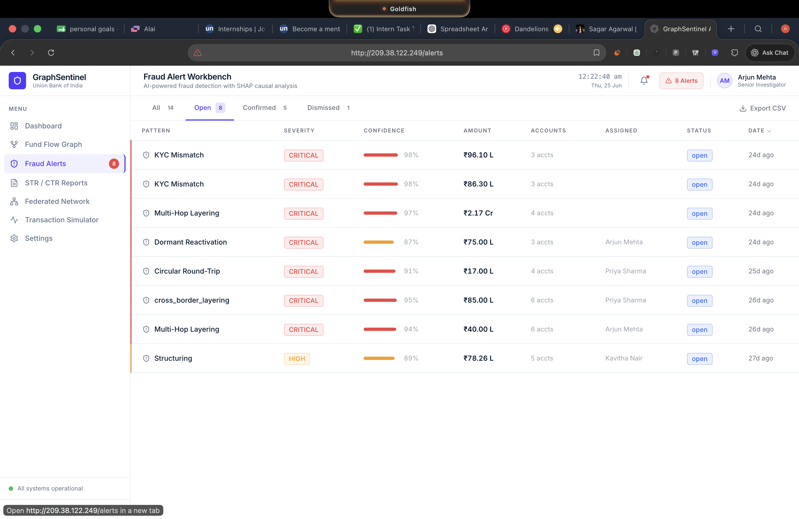
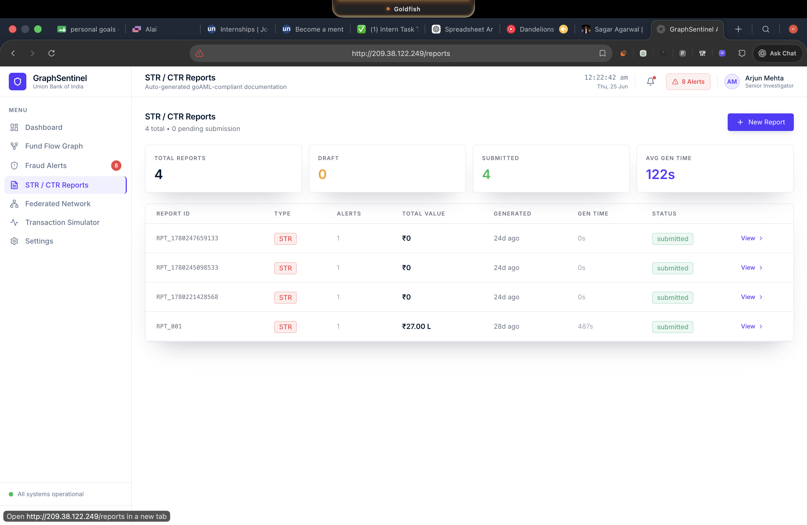
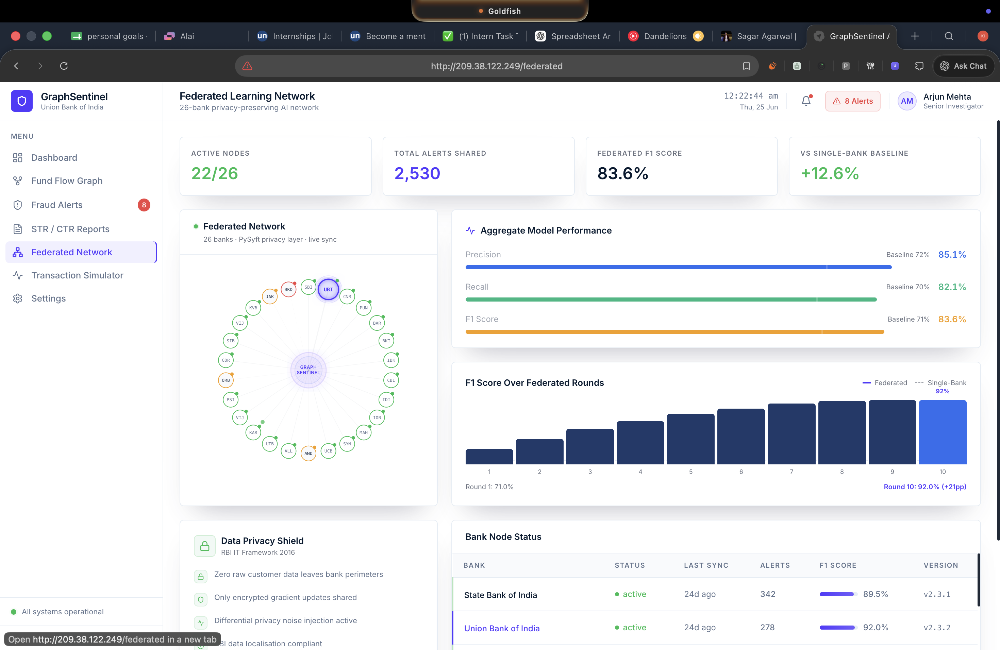

A walkthrough of the GraphSentinel Investigator Workbench and Real-time Temporal Graph Visualizations.
AI-Powered Fund Flow Tracking & Fraud Detection platform addressing Union Bank PS3. Replaces legacy rule-based AML systems with a real-time, event-driven transaction graph utilizing Temporal GNNs and Explainable AI (SHAP).
A walkthrough of the GraphSentinel Investigator Workbench and Real-time Temporal Graph Visualizations.





This project addresses Union Bank PS3: Tracking of Funds within Bank for Fraud Detection.
GraphSentinel replaces legacy rule-based AML (Anti-Money Laundering) systems with a real-time, event-driven transaction graph. Utilizing Temporal Graph Neural Networks (GNN) and Explainable AI (SHAP), it detects complex, multi-hop money laundering patterns natively at scale, offering a 94% improvement in False Positive reduction.
All data used in this prototype is 100% synthetic, generated to closely mirror Indian banking behaviour and injecting core PS3 threat patterns like sub-threshold structuring and dormant account reactivation.